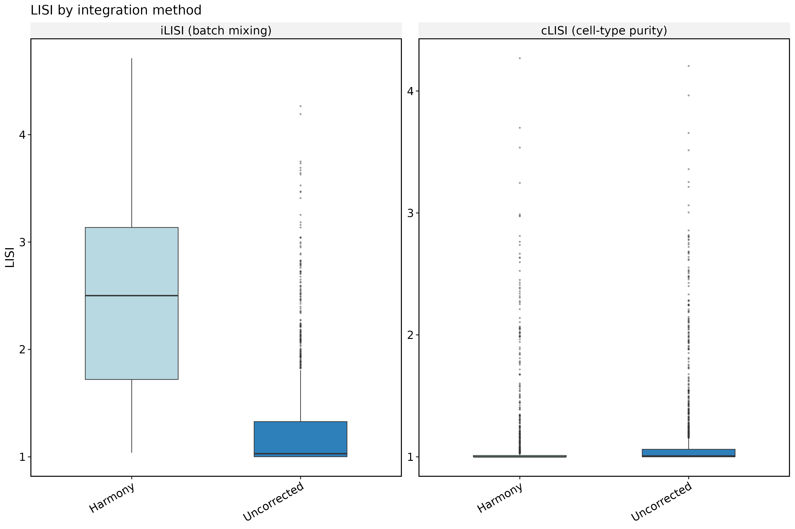
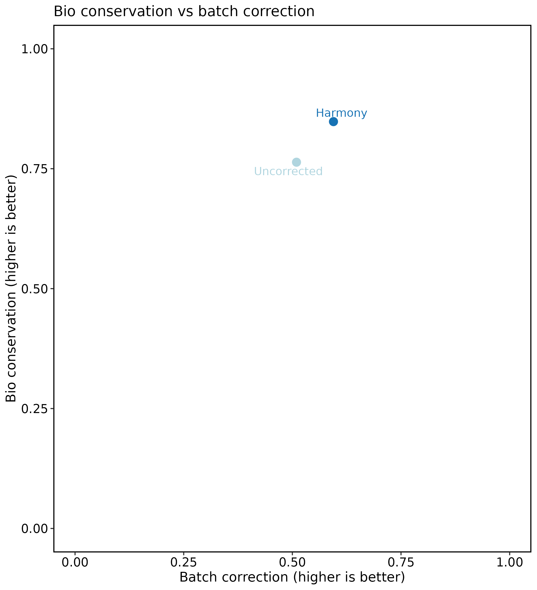
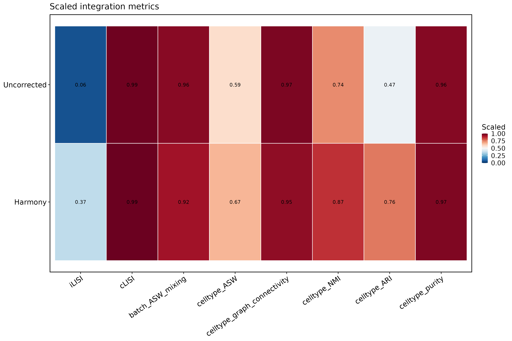
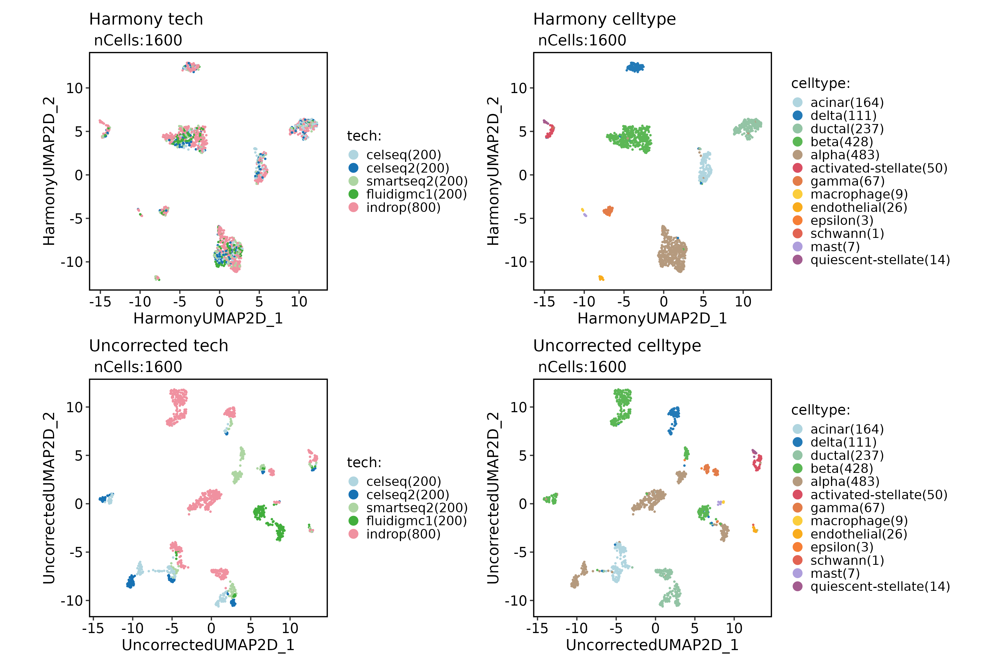

Integration benchmark workflow
Source:vignettes/integration-benchmark-workflow.Rmd
integration-benchmark-workflow.RmdWhat you will do
- Question: which method balances batch mixing and biological preservation on these cells?
-
Input: All 1,600 cells in
panc8_sub, withtechfor batch andcelltypefor biological evaluation. - Output: Per-method run status, latent-space metrics, summary plots and exported score tables.
- How to run: start a fresh R session and run the chunks in order. Printed tables and figures below are generated from that run; code-only alternatives are identified explicitly.
This article compares batch-correction methods on the same scRNA-seq
object with [RunIntegrationBenchmark()]. The runner scores each
latent embedding (not UMAP) with scIB-style metrics,
stores tables in srt@tools$IntegrationBenchmark, and
returns the Seurat object for plotting with
[IntegrationBenchmarkPlot()].
Use this workflow when you need a reproducible side-by-side report
for Uncorrected, Harmony,
fastMNN, or other [RunIntegration()] methods on the same
input.
Prepare the required Harmony source
SCOP’s RunHarmony2() checks the official GitHub package
origin. A CRAN installation with the same package name does not satisfy
that check and can trigger an installation attempt in the middle of an
analysis. Install the exact source before starting this page, then
restart R:
remotes::install_github(
"immunogenomics/harmony@df19af23ae0639bd6ea2da63898f973f08c85862",
upgrade = "never"
)The tutorial’s dependency preflight is read-only. It fails with a clear setup requirement instead of allowing an implicit installation during fitting.
Load data
library(scop)
set.seed(11)
harmony_source <- utils::packageDescription("harmony")
stopifnot(identical(harmony_source$RemoteUsername, "immunogenomics"),
identical(harmony_source$RemoteSha, "df19af23ae0639bd6ea2da63898f973f08c85862"))
data.frame(package = "harmony", version = harmony_source$Version,
source = paste(harmony_source$RemoteUsername, harmony_source$RemoteRepo, sep = "/"),
revision = harmony_source$RemoteSha)
#> package version source
#> 1 harmony 2.0.4 immunogenomics/harmony
#> revision
#> 1 df19af23ae0639bd6ea2da63898f973f08c85862
data(panc8_sub)
table(panc8_sub$tech)
#>
#> celseq celseq2 fluidigmc1 indrop smartseq2
#> 200 200 200 800 200
table(panc8_sub$celltype)
#>
#> acinar activated-stellate alpha beta
#> 164 50 483 428
#> delta ductal endothelial epsilon
#> 111 237 26 3
#> gamma macrophage mast quiescent-stellate
#> 67 9 7 14
#> schwann
#> 1Run the benchmark
Keep the batch column (tech) and a biological label
column (celltype) fixed across methods. LISI and clustering
metrics are computed on each method’s latent reduction (for example
Harmony or Uncorrectedpca).
panc8_sub <- RunIntegrationBenchmark(
panc8_sub,
batch = "tech",
celltype = "celltype",
methods = c("Uncorrected", "Harmony"),
nHVF = 2000,
linear_reduction_dims = 50,
linear_reduction_dims_use = 1:30,
perplexity = 30,
skip_failed = FALSE,
nonlinear_reduction_dims = 2, seed = 11,
verbose = FALSE
)
#> Warning: Data 1/5 of the `srt_list` is "unknown"
#> Warning: Data 2/5 of the `srt_list` is "unknown"
#> Warning: Data 3/5 of the `srt_list` is "unknown"
#> Warning: Data 4/5 of the `srt_list` is "unknown"
#> Warning: Data 5/5 of the `srt_list` is "unknown"
#> Warning: No layers found matching search pattern provided
#> Warning: Layer 'scale.data' is empty
#> Warning: No layers found matching search pattern provided
#> Warning: Layer 'scale.data' is emptyThe 2,000 variable genes and 30 latent dimensions define the shared
model input; all cells are scored. No cell subsampling is performed.
skip_failed = FALSE stops this two-method comparison if
either method fails, so one successful method cannot be mistaken for a
complete comparison.
Print summary tables
Use thisplot::print_colored_table() on the stored
tables. The summary view shows scaled overall, bio, and batch scores;
the metrics view lists every metric per method.
bench <- panc8_sub@tools$IntegrationBenchmark
bench$runs
#> method status error runtime_s latent umap
#> 1 Uncorrected success 16.458 Uncorrectedpca UncorrectedUMAP2D
#> 2 Harmony success 22.475 Harmony HarmonyUMAP2D
stopifnot(all(bench$runs$status == "success"))
thisplot::print_colored_table(
bench$summary,
by = "row",
palette = "Chinese"
)
#> method status overall bio batch iLISI cLISI celltype_ASW batch_ASW_mixing celltype_graph_connectivity celltype_ARI celltype_NMI runtime_s latent umap
#> Uncorrected success 0.6753851 0.7860799 0.5093428 0.0632008 0.9892034 0.5881147 0.9554849 0.9713626 0.4699072 0.7378917 16.458 Uncorrectedpca UncorrectedUMAP2D
#> Harmony success 0.7792839 0.8673961 0.6471157 0.3724491 0.9939972 0.6688506 0.9217823 0.9457216 0.7628313 0.8654756 22.475 Harmony HarmonyUMAP2D
metrics <- bench$metrics
metrics <- metrics[
!grepl("_LISI_mean$", metrics$metric), ,
drop = FALSE
]
thisplot::print_colored_table(
metrics,
by = "col",
palette = "Paired"
)
#> metric category value scaled direction method
#> batch_ASW_mixing batch 0.9554849 0.9554849 higher Uncorrected
#> celltype_ASW bio 0.1762294 0.5881147 higher Uncorrected
#> celltype_graph_connectivity bio 0.9713626 0.9713626 higher Uncorrected
#> celltype_NMI bio 0.7378917 0.7378917 higher Uncorrected
#> celltype_ARI bio 0.4699072 0.4699072 higher Uncorrected
#> celltype_purity bio 0.9600000 0.9600000 higher Uncorrected
#> iLISI batch 1.2528032 0.0632008 higher Uncorrected
#> cLISI bio 1.1295592 0.9892034 higher Uncorrected
#> batch_ASW_mixing batch 0.9217823 0.9217823 higher Harmony
#> celltype_ASW bio 0.3377013 0.6688506 higher Harmony
#> celltype_graph_connectivity bio 0.9457216 0.9457216 higher Harmony
#> celltype_NMI bio 0.8654756 0.8654756 higher Harmony
#> celltype_ARI bio 0.7628313 0.7628313 higher Harmony
#> celltype_purity bio 0.9675000 0.9675000 higher Harmony
#> iLISI batch 2.4897966 0.3724491 higher Harmony
#> cLISI bio 1.0720339 0.9939972 higher Harmony Read the scores without overclaiming
Read the value and scaled columns
separately. Raw iLISI increases when neighborhoods contain more batches;
raw cLISI is closest to 1 when a neighborhood retains a single cell
type. The scaled cLISI score reverses that direction so larger scaled
values represent better label preservation. The printed
direction field refers to the scaled score, not raw
cLISI.
The biological summary combines label separation, connectivity and clustering agreement. The batch summary combines mixing measures. The overall score uses 60% biological and 40% batch weight by default; it is a chosen trade-off, not a probability of success. Inspect every metric and the label-by-batch balance before preferring a method. A high batch score can accompany overcorrection, and labels unique to one technology cannot be made to mix legitimately.
Missing metrics remain missing rather than becoming a successful result. This small bundled study subset illustrates comparison on the same cells; it does not establish a universal ranking of integration methods. To adapt the benchmark, keep input cells, feature selection, dimensions and evaluation labels fixed, then report the same raw tables and run statuses for each method.
Plot all views
IntegrationBenchmarkPlot() with
plot_type = "auto" returns a named list: box
(per-cell LISI), heatmap, scatter, and
umap.
plots <- IntegrationBenchmarkPlot(panc8_sub, verbose = FALSE)
names(plots)
#> [1] "box" "heatmap" "scatter" "umap"
plots$box
plots$scatter
plots$heatmap
plots$umap
Individual plot types are also available:
IntegrationBenchmarkPlot(panc8_sub, plot_type = "box")
IntegrationBenchmarkPlot(panc8_sub, plot_type = "umap")Save, reload, and check the hand-off
The build uses a temporary directory so repeated rendering cannot overwrite a previous analysis. For your work, replace it with a new persistent output folder. Save the object and plain-text metadata; a figure alone cannot reproduce the analysis. No cells are sampled for this export.
output_dir <- file.path(tempdir(), "integration-benchmark-workflow")
dir.create(output_dir, recursive = TRUE, showWarnings = FALSE)
result_file <- file.path(output_dir, "analysis.rds")
saveRDS(panc8_sub, result_file)
utils::write.csv(bench$summary, file.path(output_dir, "benchmark-summary.csv"), row.names = FALSE)
utils::write.csv(bench$metrics, file.path(output_dir, "benchmark-metrics.csv"), row.names = FALSE)
utils::write.csv(bench$runs, file.path(output_dir, "benchmark-runs.csv"), row.names = FALSE)
utils::write.csv(panc8_sub@meta.data, file.path(output_dir, "cell-metadata.csv"))
reloaded <- readRDS(result_file)
stopifnot(identical(colnames(reloaded), colnames(panc8_sub)),
identical(reloaded@meta.data, panc8_sub@meta.data),
identical(SeuratObject::Reductions(reloaded),
SeuratObject::Reductions(panc8_sub)))
data.frame(file = basename(list.files(output_dir, full.names = TRUE)),
bytes = file.info(list.files(output_dir, full.names = TRUE))$size)
#> file bytes
#> 1 analysis.rds 41787710
#> 2 benchmark-metrics.csv 1601
#> 3 benchmark-runs.csv 181
#> 4 benchmark-summary.csv 658
#> 5 cell-metadata.csv 274267Use your own data and recover common errors
- Replace the
data(...)input withreadRDS("your-object.rds"), or create a Seurat object from a gene-by-cell raw-count matrix. Check that cell IDs are unique and metadata row names equal the expression column names. - Set the assay and grouping columns explicitly. Species, gene identifiers and reference labels must match your experiment; do not copy pancreas labels to unrelated tissue.
- If a reduction or metadata column is missing, inspect
SeuratObject::Reductions(object)andcolnames(object@meta.data), then run its producer chunk. A plot does not create the result it needs. - If a dependency is unavailable, install it in the analysis environment, restart R and rerun from the input chunk. A skipped or failed method is not evidence that it worked. Preserve warnings and the exact error in your report.
Build and analysis provenance
The receipt records the R seed. Python methods retain their documented backend seeds and parameters; setting the R seed alone does not control every backend. Package versions, BLAS libraries and backend changes can alter numerical results. Keep this receipt with the exported object. It describes this page’s actual render.
source_revision <- Sys.getenv("GITHUB_SHA")
if (!nzchar(source_revision) && nzchar(Sys.which("git"))) {
source_revision <- tryCatch(system2("git", c("rev-parse", "HEAD"), stdout = TRUE,
stderr = FALSE)[1], error = function(e) NA_character_)
}
article_source <- knitr::current_input(dir = TRUE)
build_receipt <- data.frame(
article = "integration-benchmark-workflow",
built_utc = format(Sys.time(), tz = "UTC", usetz = TRUE),
scop = as.character(utils::packageVersion("scop")),
R = as.character(getRversion()),
source_revision = source_revision,
source_has_local_changes = if (nzchar(Sys.which("git")))
length(system2("git", c("status", "--porcelain"), stdout = TRUE, stderr = FALSE)) > 0 else NA,
article_md5 = unname(tools::md5sum(article_source)),
R_seed = 11,
cells_retained = ncol(panc8_sub),
genes_in_active_assay = nrow(panc8_sub),
stringsAsFactors = FALSE
)
build_receipt
#> article built_utc scop R
#> 1 integration-benchmark-workflow 2026-10-10 12:08:12 UTC 0.9.2 4.6.1
#> source_revision source_has_local_changes
#> 1 151e7134c597a318db23aacdc01739f82fa44758 FALSE
#> article_md5 R_seed cells_retained genes_in_active_assay
#> 1 d71cb1f95a7667cb9b3dfc8e9fce882a 11 1600 12932
utils::write.csv(build_receipt, file.path(output_dir, "build-receipt.csv"),
row.names = FALSE)
writeLines(capture.output(sessionInfo()), file.path(output_dir, "session-info.txt"))Show the complete R session used for this page
sessionInfo()
#> R version 4.6.1 (2026-06-24)
#> Platform: x86_64-pc-linux-gnu
#> Running under: Ubuntu 24.04.5 LTS
#>
#> Matrix products: default
#> BLAS: /usr/lib/x86_64-linux-gnu/openblas-pthread/libblas.so.3
#> LAPACK: /usr/lib/x86_64-linux-gnu/openblas-pthread/libopenblasp-r0.3.26.so; LAPACK version 3.12.0
#>
#> locale:
#> [1] LC_CTYPE=C.UTF-8 LC_NUMERIC=C LC_TIME=C.UTF-8
#> [4] LC_COLLATE=C.UTF-8 LC_MONETARY=C.UTF-8 LC_MESSAGES=C.UTF-8
#> [7] LC_PAPER=C.UTF-8 LC_NAME=C LC_ADDRESS=C
#> [10] LC_TELEPHONE=C LC_MEASUREMENT=C.UTF-8 LC_IDENTIFICATION=C
#>
#> time zone: UTC
#> tzcode source: system (glibc)
#>
#> attached base packages:
#> [1] stats graphics grDevices utils datasets methods base
#>
#> other attached packages:
#> [1] scop_0.9.2
#>
#> loaded via a namespace (and not attached):
#> [1] RColorBrewer_1.1-3 jsonlite_2.0.0 shape_1.4.6.1
#> [4] magrittr_2.0.5 spatstat.utils_3.2-5 farver_2.1.2
#> [7] rmarkdown_2.32 GlobalOptions_0.1.4 fs_2.1.0
#> [10] ragg_1.5.2 vctrs_0.7.3 ROCR_1.0-12
#> [13] Rsamtools_2.28.0 spatstat.explore_3.8-3 RcppRoll_0.4.0
#> [16] htmltools_0.5.9 BiocNeighbors_2.6.0 sass_0.4.10
#> [19] thisutils_0.5.2 sctransform_0.4.3 parallelly_1.48.0
#> [22] KernSmooth_2.23-26 bslib_0.12.0 htmlwidgets_1.6.4
#> [25] desc_1.4.3 ica_1.0-3 plyr_1.8.9
#> [28] plotly_4.12.1 zoo_1.9-1 cachem_1.1.0
#> [31] igraph_2.3.4 mime_0.13 lifecycle_1.0.5
#> [34] iterators_1.0.14 pkgconfig_2.0.3 Matrix_1.7-5
#> [37] R6_2.6.1 fastmap_1.2.0 MatrixGenerics_1.24.0
#> [40] fitdistrplus_1.2-6 future_1.76.0 shiny_1.14.0
#> [43] clue_0.3-68 digest_0.6.39 thisplot_0.4.6
#> [46] colorspace_2.1-3 patchwork_1.3.2 S4Vectors_0.50.3
#> [49] Seurat_5.6.0 tensor_1.5.1 RSpectra_0.16-2
#> [52] irlba_2.3.7 GenomicRanges_1.64.0 textshaping_1.0.5
#> [55] labeling_0.4.3 progressr_1.0.0 spatstat.sparse_3.2-0
#> [58] httr_1.4.9 polyclip_1.10-7 abind_1.4-8
#> [61] compiler_4.6.1 withr_3.0.3 doParallel_1.0.17
#> [64] S7_0.2.2 BiocParallel_1.46.0 pak_0.11.1
#> [67] fastDummies_1.7.6 ggforce_0.5.0 MASS_7.3-65
#> [70] proxyC_0.5.2 rjson_0.2.23 tools_4.6.1
#> [73] lmtest_0.9-40 otel_0.2.0 httpuv_1.6.17
#> [76] future.apply_1.20.2 goftest_1.2-3 glue_1.8.1
#> [79] nlme_3.1-169 promises_1.5.0 grid_4.6.1
#> [82] Rtsne_0.17 cluster_2.1.8.2 reshape2_1.4.5
#> [85] generics_0.1.4 gtable_0.3.6 spatstat.data_3.1-9
#> [88] tidyr_1.3.2 data.table_1.18.6.1 XVector_0.52.0
#> [91] sp_2.2-3 BiocGenerics_0.58.1 spatstat.geom_3.8-3
#> [94] RcppAnnoy_0.0.23 ggrepel_0.9.8 RANN_2.6.3
#> [97] foreach_1.5.2 pillar_1.11.1 stringr_1.6.0
#> [100] spam_2.11-4 RcppHNSW_0.7.0 later_1.4.8
#> [103] circlize_0.4.18 splines_4.6.1 tweenr_2.0.3
#> [106] dplyr_1.2.1 lattice_0.22-9 survival_3.8-6
#> [109] deldir_2.0-4 tidyselect_1.2.1 ComplexHeatmap_2.28.0
#> [112] Biostrings_2.80.2 miniUI_0.1.2 pbapply_1.7-5
#> [115] knitr_1.52 gridExtra_2.3.1 Seqinfo_1.2.0
#> [118] IRanges_2.46.0 scattermore_1.2 RhpcBLASctl_0.23-42
#> [121] stats4_4.6.1 xfun_0.61 matrixStats_1.5.0
#> [124] UCSC.utils_1.8.0 stringi_1.8.9 yaml_2.3.12
#> [127] evaluate_1.0.5 codetools_0.2-20 tibble_3.3.1
#> [130] cli_3.6.6 uwot_0.2.5 RcppParallel_6.2.1
#> [133] Signac_1.17.1 xtable_1.8-8 reticulate_1.47.0
#> [136] systemfonts_1.3.2 jquerylib_0.1.4 harmony_2.0.4
#> [139] GenomeInfoDb_1.48.0 Rcpp_1.1.2 globals_0.19.1
#> [142] spatstat.random_3.5-2 png_0.1-9 spatstat.univar_3.2-0
#> [145] parallel_4.6.1 pkgdown_2.2.1 ggplot2_4.0.3
#> [148] dotCall64_1.2 sparseMatrixStats_1.24.0 bitops_1.1-0
#> [151] listenv_1.1.0 viridisLite_0.4.3 scales_1.4.0
#> [154] ggridges_0.5.7 SeuratObject_5.4.0 purrr_1.2.2
#> [157] crayon_1.5.3 GetoptLong_1.1.1 rlang_1.3.0
#> [160] fastmatch_1.1-8 cowplot_1.2.0What to report
A compact integration benchmark report should include:
- batch and cell-type columns used for scoring;
- methods compared and shared integration parameters
(
nHVF, latent dimensions); - the colored summary and metrics tables;
- LISI boxplots, bio-vs-batch scatter, and UMAP panels colored by batch and cell type.
Overall score uses scIB weights:
0.6 * bio + 0.4 * batch. Higher is better for all scaled
metrics shown in the summary table.
A higher batch score alone can reward overcorrection. Compare biological retention, batch mixing and marker patterns together. Results depend on this dataset and labels, and do not establish a universally best integration method.